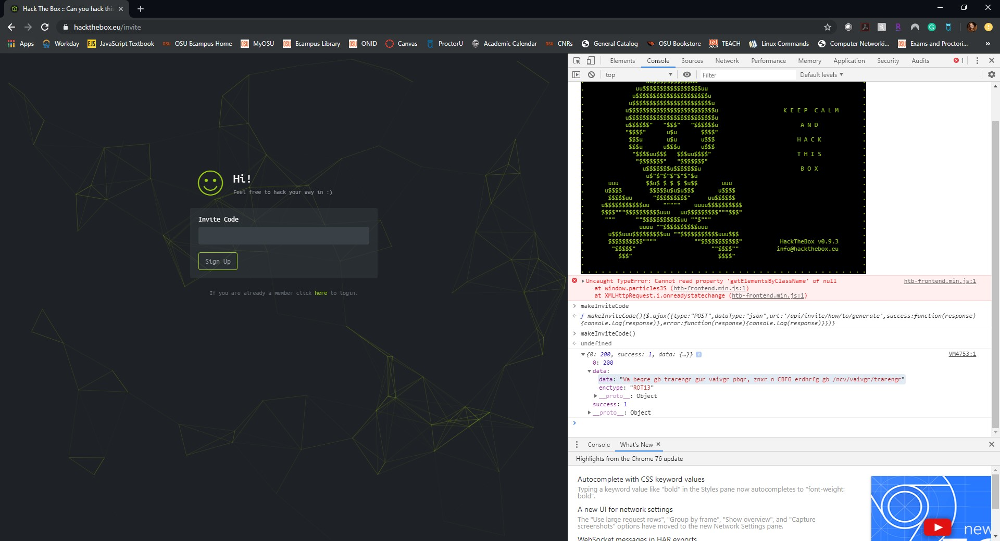
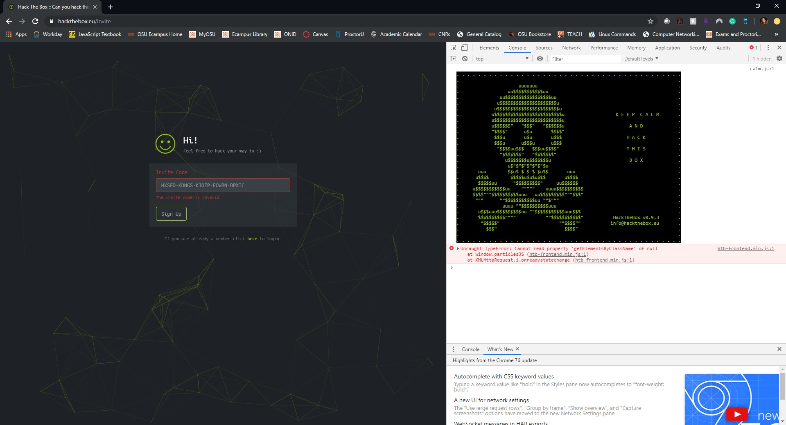

Final Write Up
Welcome to the page of Alexandra Carper
Final Write Up
Final August 15, 2019
The first thing I did was navigate to the Hack the Box website. I scrolled to the bottom and clicked the “Join” button to try to create an account.
After clicking “Join”, I was brought to a page that wanted an invite code to continue. I did not see anything else within the page, so I decided to inspect the page with the Chrome Web Developer tools. Within the tools I saw a script for /js/inviteapi.min.js that looked like it might be able to help me get an invite code. So, I typed this URL into the navigation bar and hit Enter.
Typing this URL into the navigation bar brought me to a page with code for the script. Examining the page, I saw a portion that looked like a function for “makeInviteCode”, which I was curious about. After examining the page further, I decided to navigate to the previous page to see if this was a function within the script.
When I navigated back to the previous page, I opened the Console within the Web Developer Tools and typed in “makeInviteCode”. This did not result in anything I was looking for, so I tried typing it in as a function call with the parentheses included.
After typing in the function call for makeInviteCode(), I received a response of 200 with some data within the response. Receiving the phrase made me think I was on the right track, so I expanded the data section to see what was inside.
Within the data section I saw the phrase and an “enctype”, which I was familiar with seeing in my job. This usually stands for an encode type. I had never heard of ROT13 before, but I decided to search for a tool within Google to see if there was a tool for decoding phrases that are encoded in ROT13.
The search within google yielded a website called Cryptii that allows you to decode ROT13 encoded messages. Copying and pasting the message, I was able to receive the plaintext “In order to generate the invite code, make a POST request to /api/invite/generate”. I wasn’t quite sure how to go about this POST request, so I searched Google for a way to implement this easily.
I was able to find a StackOverflow article that showed me commands for making POST requests with “curl” through the command line. I decided to try using this command for the POST request, so I opened my command prompt and entered the following command:
Then I hit “Enter” to submit the POST request.
The response from the POST request was able to give me another code that was encoded. So, I went back to my website for ROT13 and tried entering this code to be decoded by the tool.

When I submitted the code within Cryptii I received a plaintext result, but putting this in as the invite code did not work. So I decided to try another method of decoding the code. With some Google research on common encoding types, I found that Base64 is a common encoding method as well. So I navigated to another site that allowed me to decode the encoded code I received.
The result of this decoding method looked a lot more correct right off the bat. So I copied this code and entered it into the invite page for Hack the Box to see if it would work.
The code worked for me and I was able to sign up for Hack the Box within the next page. I created an account and started searching for challenges I could complete.
I decided to start slow with the challenges, since I am not very familiar with Hack the Box, so I chose a simple 10 point challenge called “You Can Do It!” from the Crypto category and downloaded the file. When I extracted the file, I entered the password that was given within the challenge information, “hackthebox”.
When I opened the file, I was presented with a string of what seemed like random letters. To me, it seemed pretty straightforward that these letters could form the flag for the challenge, so I did a little research on Google to see exactly what the nature of this set of letters was. I found that it was probably an anagram, so I decided to use the text file to try to solve the anagram.
I started out by spacing out the letters so I could see them more clearly. Once I spaced them out, I was able to notice that the same characters within the title of the challenge appeared within the anagram, so I went ahead and separated out the letters into the phrase “YOU CAN DO IT” and deleted these letters from the original set of letters, so I could see what was left.
I originally tried “SAY YOU CAN DO IT”, but the letters that were left did not seem like they would form intelligible words, so I decided to try something else.
The next phrase I tried was “SEE YOU CAN DO IT!”, and I saw that better letters were left for making two more words.
I finally discovered that the anagram was “YOU SEE THAT YOU CAN DO IT!”.
When I entered this in as the flag in the predefined format, I received a success message at the bottom right of the screen, and I completed the challenge. This one was not too hard, but I was wondering what it had to do with hacking at all. I think that maybe anagrams are used widely as key phrases for passwords and access points. I would like to read about this further, and I’m really interested in solving more anagrams because I love puzzles!
The next challenge I wanted to try was the Art challenge. I’m an artsy person, so it seemed pretty fun! So I downloaded and extracted the zip file and opened the art.png file that was within the folder.
The art.png file came up as a really colorful maze picture. I had absolutely no clue what to do with this picture or how to extract data out of it, so I went to the forum page for this challenge and looked through it to try to find some sort of hint.
I found a hint on the page that talked about using a programming language, which I thought was really strange for images. Nonetheless, I followed the user’s advice and Googled “color image programming languages”, which came up with results for a language called Piet. I clicked on the Wikipedia page and decided to learn more about this language.
From the Wikipedia page, I was able to find that Piet is an esoteric programming language that uses colors and encode commands as changes of color between adjacent pixels. HOW COOL IS THIS! Then, I decided to Google how to execute Piet code, and I found a really cool website that would execute it for you called bertnase.de. So I navigated to this site to see what I could find.
The site allows you to upload a .png image to execute the Piet program, so I uploaded the art.png file and clicked “Upload and execute”.
The result gave me the entire flag with some random characters on the end. I examined the flag, and decided to enter it into the Hack the Box challenge to see if it worked, and it did! I completed the challenge and the green box on the bottom right of the page appeared. On to the next challenge!
The next challenge I decided to do was the Find the Easy Pass challenge. I downloaded the zip file within the challenge details, extracted it, and ran the executable file within the folder. A window appeared that prompted me to enter a password, so I entered “hackthebox” again and received a window that said “Wrong Password!”. Obviously, I had the wrong password, so I needed to figure out how to step through the program to see if there was any way to discover the password within the code of the executable.
After a Google search, I found a really cool debugger called OllyDbg that would allow me to load up the program and debug it on my desktop. I downloaded this tool from the site and opened it, and then I opened the Easy Pass executable file within the debugger to examine the code.
It was hard to know where to start, but I wanted to see what happened within the code when I entered an incorrect password. So, I executed the code within the debugger to see what happened. I didn’t get much from this attempt. After clicking around for a while, I right clicked and decided to examine the relevant strings within the code like we did within our labs that used debuggers.
With this view, I was able to find the area where the code output the “Wrong Password”. I double clicked this message, which brought me to a view that showed me the machine instructions associated with this output.
Looking at the machine instructions, I found a bunch of calls and a JMZ, which I know from our assembly language class is equivalent to “jump if not equal”. I decided to set some breakpoints here and execute the file again to look at the contents of the registers when this happened.
After setting breakpoints, I was able to execute the file and enter a password in the window to see what occurred within the registers and if they would give me a hint as to the password.
I entered “hack the box” again and hit enter to see what occurred within the registers.
Within the registers I could see another value within the EDX register that was “fortran!”. I theorized that this was probably the password that the program was checking if my input was equal to, so I decided to execute the program again using this password to see if it was correct.
Upon entering the password, I received a “Good Job. Congratulations” message, which indicated that the password was indeed correct. I still had to enter the flag into the Hack the Box challenge, however, so I entered HTB{fortran!} into the challenge flag field, and it was correct! I was done with the challenges!
While these challenges were fun, they were pretty difficult, especially with so little instructions. It looks like there is a whole community out there for people who enjoy solving these problems, and it was really helpful that they had posted some hints within the forum page. Without using Google, I have no idea how I would complete these challenges. It seems the material we learned within the course this quarter does not even begin to cover all the different subsections of cybersecurity. My favorite challenge was the Art challenge because I learned about a programming language I didn’t know even existed! I think it’s fascinating that text could be encoded in images, and I’m really interested in looking into this in the future for fun. I think this activity was a great way to show us that the cybersecurity field is much broader than we covered within the course and that there is more information to be discovered, so we should keep learning! I will definitely try to solve more challenges on Hack the Box when I graduate. It’s actually pretty fun, and I learned a lot from completing the challenges!
Alexandra Carper
This page was created for Weekly Writeups for Defense Against the Dark Arts